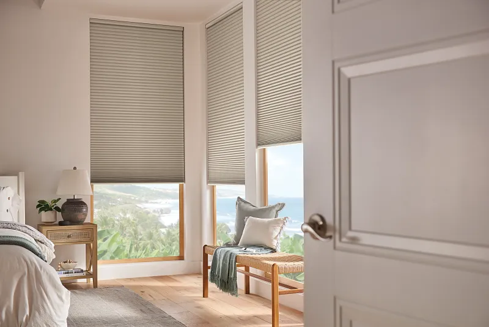

Motorized Blinds & Shades for Oklahoma City & Edmond Homes
Transform your Oklahoma City or Edmond home with motorized blinds and shades that integrate seamlessly with your smart home system. At Shaded In The Sun, we specialize in Norman® and Graber® motorized window treatments.
What You'll Learn in This Article:
- ✓ Six key benefits of motorized shades: convenience, scheduling, energy savings, safety, smart home integration, and outdoor solutions
- ✓ How voice control and scheduling work with Graber, Norman, and Draper systems
- ✓ Why motorized treatments enhance family safety by eliminating dangerous cords
- ✓ Real solutions for Oklahoma's intense heat and climate challenges
Call Brent & Edna today at 405-259-5599
for your motorized window treatment questions.
Key Benefits of Motorized Blinds & Shades in Oklahoma
At Shaded In The Sun, we specialize in motorized blinds for Oklahoma City and motorized shades for Edmond that bring convenience and control to your home. Whether you're interested in motorized blinds throughout Oklahoma City for your primary residence or exploring automated blinds for Oklahoma City's entire metro area, we have the expertise and product selection to meet your needs.
Convenience

The ability to adjust your shades to your desired position with a simple voice command offers an unparalleled level of convenience. Imagine adjusting your motorized blinds without leaving the couch. The ease of control and adjustment from anywhere in the room or even the world adds a layer of luxury and simplicity to your daily life. Whether you have roller shades, cellular shades, or solar shades, motorization transforms how you interact with your windows. Motorized blinds in Oklahoma City offer unmatched convenience for homeowners.
Scheduling

Motorized shades for Edmond residents can be scheduled for automatic operation, providing hands-free adjustment at any time of the day. Program your motorized blinds in Oklahoma City to open with the sunrise and close at sunset, or at specific times to increase energy efficiency or give the illusion that you're still home. Automated blinds throughout Oklahoma City make scheduling effortless and intuitive.
Energy Efficiency

Managing sunlight throughout the day can significantly increase your home's energy efficiency. By automatically adjusting your shades to block out the sun during peak hours, you can reduce your reliance on air conditioning, leading to lower energy bills and a more sustainable lifestyle. Solar shades are particularly effective at controlling heat gain in Oklahoma's intense summer sun.
Safety
Opting for motorized window treatments enhances safety by eliminating cords. This is especially important in homes with small children or pets, as it removes the risk of entanglement and creates a safer environment for your loved ones. Motorized systems provide the ultimate in safety without compromising on control.
Integration

Motorized systems can be integrated into numerous different smart home systems. Shaded In The Sun offers motorized products from leading brands like Graber, Norman, and Draper that connect seamlessly with Alexa and Google Home, allowing you to control your window treatments with voice commands. Connect your shades with other smart devices, such as lighting, thermostats, and security systems, to create a fully automated and responsive home environment.
Motorized Patio Shades

Solar shades are perfect for your outdoor spaces and Sun Rooms. Whether you're covering a large patio area or want to control sun and privacy with the tap of a button, motorized exterior shades make it easy. No more wrestling with cords or manual cranks - just effortless shade control that keeps your outdoor living space comfortable all season long.
By incorporating motorized window treatments from Graber® and Norman®, you can create a space that is stylish, functional, and convenient. Shaded In The Sun is an authorized dealer for both brands, serving Oklahoma City, Edmond, and the surrounding metro area. When you choose motorized blinds for Oklahoma City from our showroom, you're investing in quality and expertise. Whether you're looking for motorized shades for your Edmond home or automated blinds for your entire residence in Oklahoma City, we provide expert guidance and professional installation. Our motorized blinds for Oklahoma City and motorized shades for Edmond are backed by top brands and personalized service. Call us today to explore motorized and automated blind options throughout Oklahoma City and Edmond.
Related Articles
Why Choose Shaded In The Sun
Learn why Shaded In The Sun is Oklahoma City's top choice for professional motorized window treatment installation and expertise. Discover our installation expertise
Energy-Saving Window Shades
Learn how motorized shades can dramatically reduce your energy costs in Oklahoma's climate. Explore energy-saving window shades
Cool Your Oklahoma Sunroom
Transform your hot sunroom into comfortable living space with smart motorized solar shades. Learn how to cool your sunroom